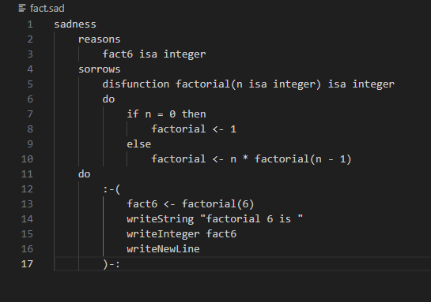
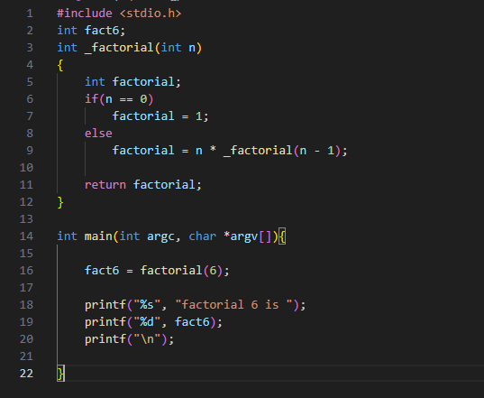

SAD is a custom programming language implemented entirely in SmallTalk and compiling to C. The project explores the core principles of designing a programming language.
SAD is a programming language that I made in my principles of programming class. It is written entirely in SmallTalk; making it a purely object oriented compiler.
This project makes a strong example of systems thinking, principles of programming languages, and object oriented design.

This is the code that you would write in my custom language.

This is the generated C code from the SAD code.